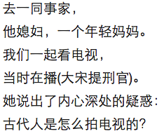
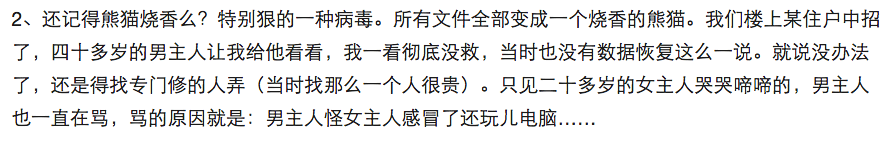
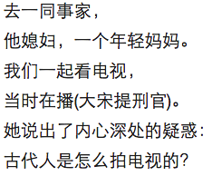
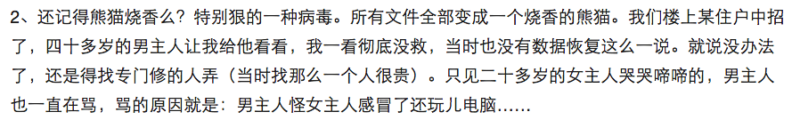
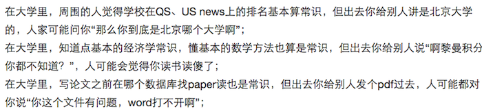
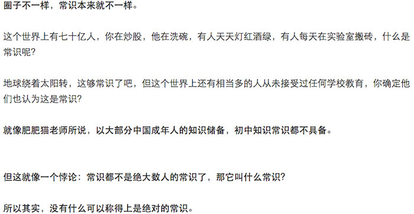
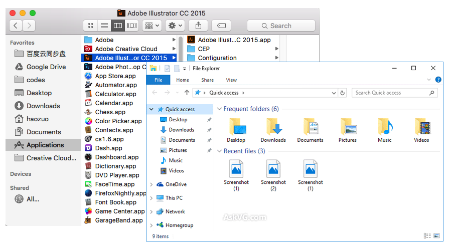

Common Knowledge
For Software Engineering Team
Created by Howard.Zuo / @右领军大都督
Background
 



But why
 More Read
http://www.zhihu.com/question/35264845OSX VS Windows
IOS VS Android
URL

reuse
- copy & paste
- runtime
- developing
use of Google/wikipedia/MDN
- Abstract
- Tokenization
Automation Testing
- reduce resource cost
- avoid risk
- shorten release cycle
No Silver Bullet
No matter new process or technique introduced
Dev & QA
We are one team to take the responsibility of the product
We are not enemy